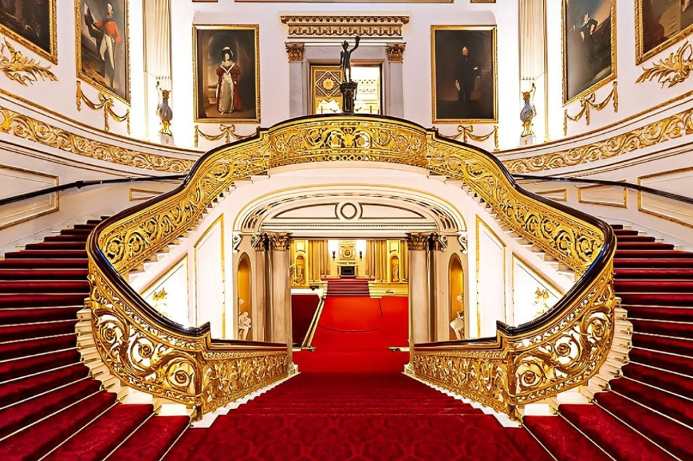

The Grand Staircase
Providing the first breathtaking impression for visiting monarchs and heads of state, John Nash's imperial staircase ascends in theatrical double-return flights beneath an exquisite gilded glass dome lantern ceiling.
- £3,900 Bronze Casting: Sculpted by Joseph Browne in 1828, featuring an interlocking pattern of acanthus leaves, oak leaves, and laurels in gleaming ormolu gilt bronze.
- Ancestral Portrait Gallery: Adorned with full-length portraits of George III, Queen Charlotte, William IV, and Queen Adelaide.
- Ceremonial Ascent: Guests ascend the crimson-carpeted stairs toward the East Gallery before being presented to the Sovereign.